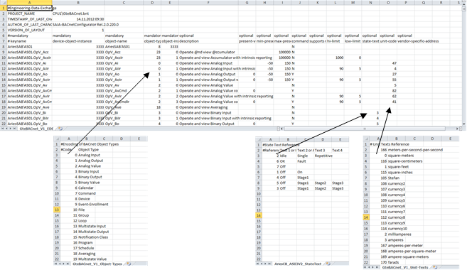

EDE file description
BACnet ensures interoperability among devices from various manufacturers. The EDE file (Engineering Data Exchange) documents BACnet project data of a device and integrates it in a 3rd party management station or engineering tool.
EDE data is designed as follows to exchange project data:
- General project information
- Required information for an individual object (column: Mandatory)
- Required information for an individual object (column: Optional)
Available optional information is taken over as an object instance in the project database. In the event that no optional information exists in the EDE file.
Creating data exports

Each vendor can add additional optional columns (information) to the EDE file. This means that vendor-specific information can be transferred to the 3rd party system.
PICS
The Protocol Implementation Conformance Statement (PICS) document lists all devices of the manufacturer and describes the supported BIBBs, object types, characters sets, and options of communication. PICS of the respective manufacturers are listed under:
The following PICS are available for vendors’s devices:
- BACnet Advanced Operator Workstation (B-AWS)
- BACnet Building Controller (B-BC)
- BACnet Advanced Application Controller (B-AAC)
- BACnet Application Specific Controller (B-ASC)
- Other BACnet Devices (B-Oth)
EDE file supported by ABT Site
Key | Mandatory/ | Remark |
|---|---|---|
keyname | M | The keyname is the system wide unique name of the data object, as it will be displayed on the client’s user interface. Example: TH1c'Flr_01'A_01'HCcr'TOa |
device-object-instance | M | The device-object-instance identifies the device which contains the object in a BACnet network. Valid value 0-4194302. |
object-name | M | The name of the object being described and identical to the Object_Name property. |
object-type | M | Contains a decimal value that represents the BACnetObjectType as used in the Object_Type property. Example: TH1c'Flr_01'A_01'HCcr'TOa |
object-instance | M | Contains the instance-number of the object as a decimal value. Valid value 0-4194302. |
description | O | Provides more detailed description of the data point and its function. |
present-value-default | O | The default value for the Present_Value property. |
min-present-value | O | Under the condition that changes of values that are less than the defined value are not executed. |
max-present-value | O | Under the condition that changes of values that are greater than the defined value are not executed. |
settable | O | Indicates whether the writable Present_Value property is controlled by an automated process (device, program) or can be set by a client. |
supportsCOV | O | Indicates whether the object supports COV or not. The letter ‘Y’ or an empty field indicates that the object supports COV. The letter “N” means COV is not supported. |
hi-limit | O | Is the upper alarm limit. |
low-limit | O | Is the lower alarm limit. |
state-text-reference | O | Display state value for binary or multistate data points. |
unit-code | O | Reference number for the unit text column. Is valid for analog and loop objects only. |
unit-text | O | Unit applied to analog values. |
vendor-specific address | O | Vendor's ID. Example: DR12.111.2345. |
notification-class | O | Contains the instance number of the notification_class object linked to the referenced object. If the object does not support intrinsic reporting, this field should be empty. |
BACnet object-type
0 | Analog input |
1 | Analog output |
2 | Analog value |
3 | Binary input |
4 | Binary output |
5 | Binary value |
6 | Calendar Defines a standard object that is used to define a list of calendar entries (date list). |
8 | BACnet device Defines a standard object whose properties represent the externally visible characteristics of a BACnet device. |
13 | Multi-state input |
14 | Multi-state output |
15 | Notification class Defines a standard object that contains the necessary information for the distribution of event alarms with BACnet systems. |
16 | Program Object for program controlling in a BACnet device (e.g. load and start). |
17 | Schedule |
19 | Multi-state value |
20 | TrendLog Archives a property of a referenced object and, when predefined conditions are met, saves the value of the property and a timestamp in an internal buffer for subsequent retrieval. |
23 | Accumulator Addition of impulse data of measurement devices over the time. |
24 | PulsConverter Object for impulse conversion for mass counting in defined time intervals. |
Csv output file format
There are two variants of the output files:
- All information is available in a csv file (object description, object type, unit, state text). The individual information is defined under its own column.
- The information is separated in the AS_??.csv main file, AS_??-Object-Types.csv, AS_??-State-Texts.csv and AS_??-Unit-Texts.csv.
The column separator is dependent on the regional settings in Windows when using Excel: Control Panel > Clock, Language, Region > Change the date, time, or number format > Additional settings > List separator.
CSV without reference files
All information (object type, unit and state texts) are saved in the csv file.

CSV with reference files
In the CSV file with reference files, various types of information are saved in individual files.

Object types
Creates for each used object type an entry during the EDE file export, for example, 0;AnalogInput.
State text
Creates for each used state text an entry during the EDE file export, for example, 1;False;True.
Units text
Creates for each used unit an entry during the EDE file export, for example, 47;Watts.